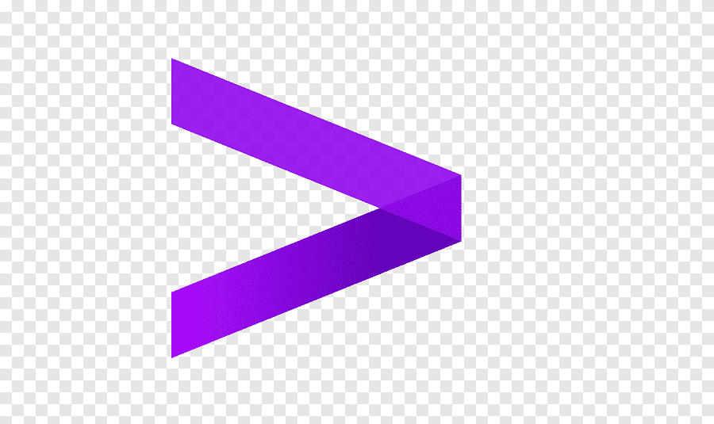

I am currently hoping for a miracle, pursuing opportunities where I can apply my computational science expertise to solve challenging AI problems.

Dilip Nikhil
Machine Learning Engineer & AI Developer 🧠 🤖 ✨


2025 -
2023 - 2025
Earned my Master's in Computational Science from Indiana University Bloomington, where I deepened my understanding of cutting-edge deep learning systems and optimization techniques.
Aug '23 - Jan '24
Worked as an Intern at Institutional Analytics, focusing on data clustering and optimization techniques.
Jan '24 - Jan '25
Served as a Research Assistant (RA), contributing to RAG systems and institutional analytics projects.
2021 - 2023

Served as a Senior Data Analyst at Hexaware, architecting end-to-end ML solutions in computer vision and text analytics.
Managed projects and stakeholder relationships with Niki, ICICI Bank, Josh, and others. Won the Hexaware Yuva award for leadership excellence.
2020 - 2021
Worked as a Civil Contractor handling multiple end-to-end projects under BBMP, Bengaluru, collaborating closely with the state government of India.
Volunteered during the COVID-19 pandemic to help patients and people in need access rations and immunizations.
2017 - 2019

Started my career as a Software Engineer at Accenture, focusing on text classification.
Received the Accenture Celebrates Excellence award for leadership and responsibility in ML and AI development.
selected publications
featured talks
teaching & mentorship
I share my knowledge through technical workshops and mentoring sessions, focusing on ML applications in real-world scenarios.
During my time at Hexaware, I developed and delivered training programs for junior data analysts and engineers, helping them bridge the gap between theoretical knowledge and practical implementation.